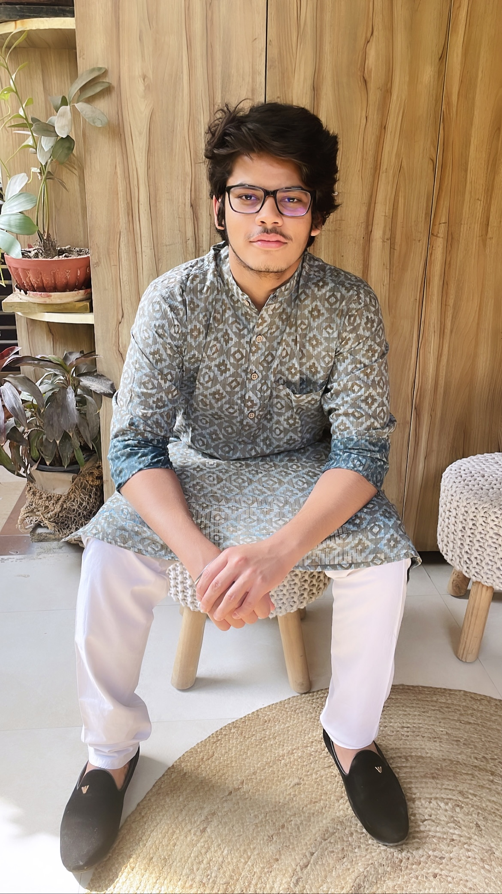

About me
Hi! My name is Adhyan Negi and here is a picture of me.
I am 18 years old and I am from New Delhi, India.
What am I doing right now? I am a rising sophomore at Michigan State University. My major is Computer Science and I am passionate about Software Development.
How I got into Computer Science
This is actually a very interesting story. Back in high school, I chose to study science but did not take Computer Science as a subject. It was a conversation with my uncle which made up my mind to take up Computer Science. Luckily it wasn't too late and I was able to get the subjects that I wanted. Since then I have been learning different things about this subject. I am proficient in Python, currently learning C++, and interested in exploring front-end and back-end development. This portfolio is actually a part of practice for HTML, CSS and JavaScript!
Some of my hobbies include running, going to the gym, watching and playing soccer and I've recently started watching Formula 1! I am a huge soccer fan. I can go hours and hours watching soccer games and talking about it. I also love travelling to differnt places.
I spend most of my time learning about new technologies. The field of Computer Science is huge and one can never stop learning if they are interested in it!